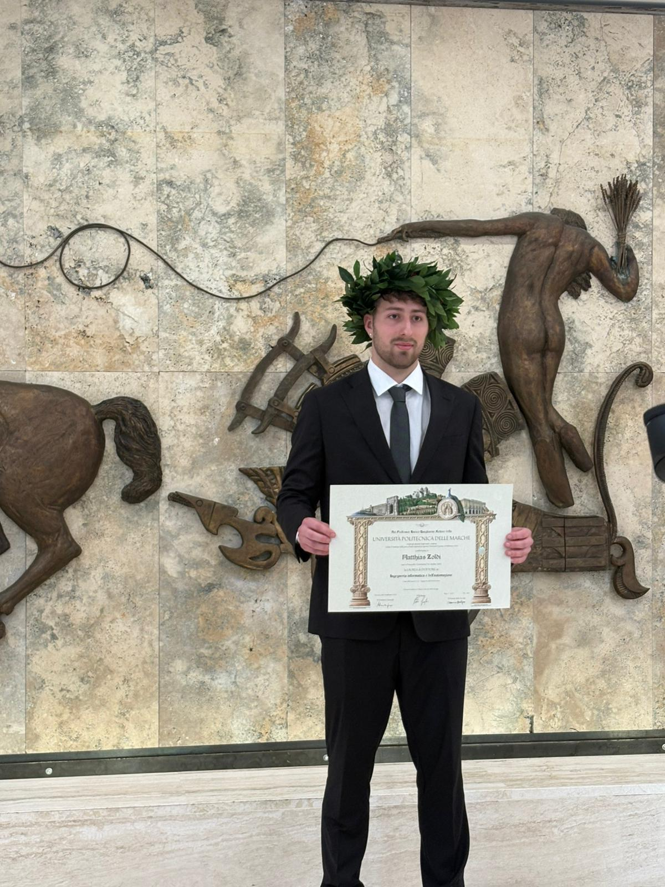

Matthias Zoldi
Junior Full Stack Developer
I hold a degree in Computer Engineering and Automation and I specialize in web and mobile development. I build full-stack applications using technologies such as Laravel, Kotlin, and Firebase, focusing on clean architecture, performance, and user-friendly design. I can help you develop scalable backend systems, Android applications, and complete web platforms.
Web application for a Wine Company
Full stack web application designed for a winery, including product management, event handling and administrative features. Some names and media content displayed in the demo have been blurred or replaced for privacy purposes.
Web application for a cleaning company
Business website for a cleaning company with quote request functionality, CV submission system and integrated contact methods.
Mobile application
Fitness and nutrition mobile application designed to help users create workout routines, track training progress, monitor statistics and manage meals and daily nutritional requirements.